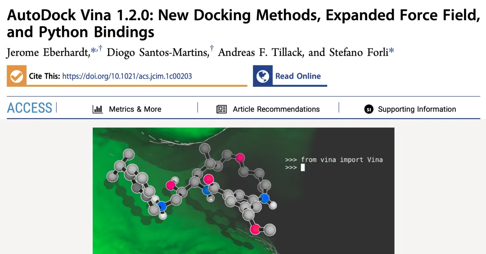
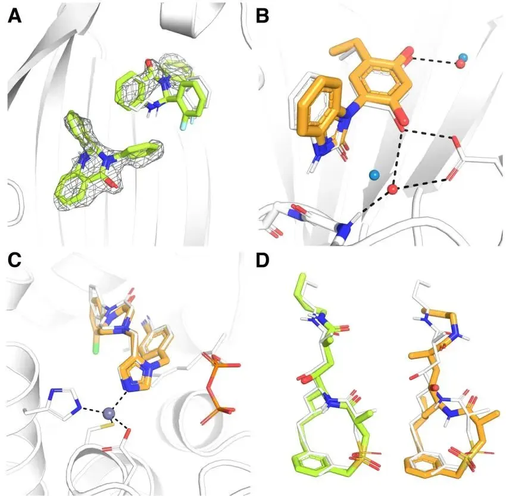
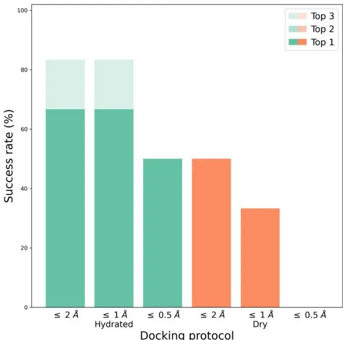
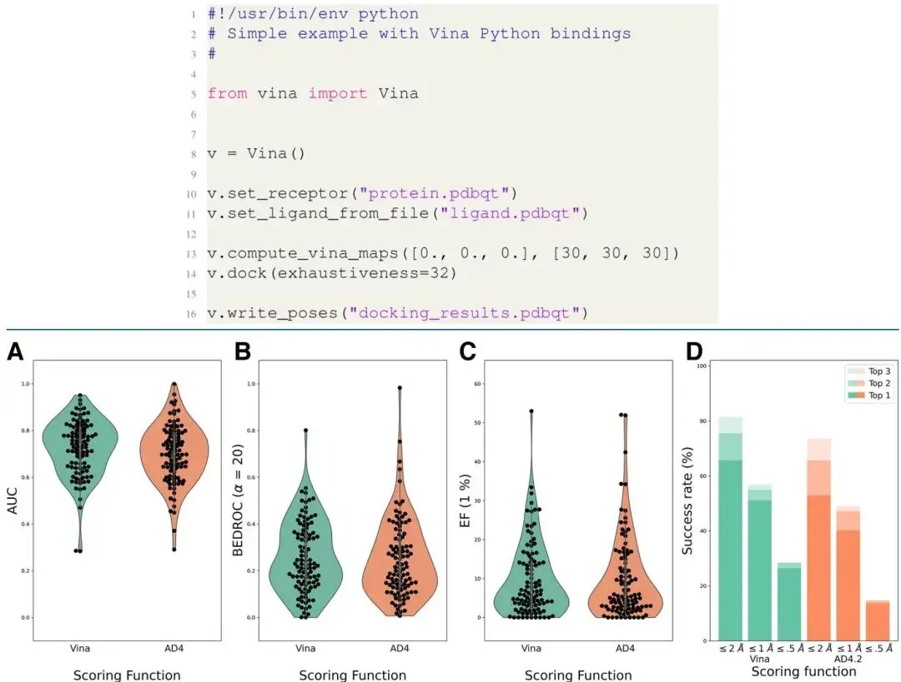

分子对接神器AutoDock Vina 1.2.0| 新增对接方法、力场
原文：https://mp.weixin.qq.com/s?__biz=MzAwMzIzOTk5OQ==&mid=2247530369&idx=1&sn=3116d5ec690b66809ae02c237010e99d&chksm=9b3c0ed1ac4b87c7569959b79529c649f5bfaa02def9626eda19093b9ab5cd1b8c4d83d89fe4#rd 合集：文献速递
一、写在前面
本次分享的是2021年发布于《Journal of Chemical Information and Modeling》的文章（IF：5.6）“AutoDock Vina 1.2.0: New Docking Methods, Expanded Force Field,and Python Bindings” DOI: 10.1021/acs.jcim.1c00203 链接：https://pubmed.ncbi.nlm.nih.gov/34278794/

分子对接作为药物发现的核心技术，通过模拟小分子与靶标蛋白的结合过程，为新药设计提供了关键洞见。在众多对接工具中，AutoDock Vina 以其高效性、精准性和开源特性脱颖而出，成为全球研究者青睐的选择。然而，随着研究的深入，Vina 在处理复杂场景（如大环分子对接、显式水分子模拟等）时显露出一定的局限性。AutoDock Vina 1.2.0 的推出标志着这一工具的重大升级，新版本不仅引入了多配体同步对接、水合对接和大环分子柔性对接等全新方法，还扩展了对 AutoDock4.2 评分函数的支持，并新增了 Python 接口。这些改进显著提升了 Vina 的功能性和灵活性。本文将深入探讨这些新特性，剖析它们如何突破原有局限，为分子对接研究注入新的活力。如果想学习分子批量对接与亲和力热图绘制可以看这里
如果需要数据分析指导 、生信热点全文复现 、自测/数据库数据个性化分析 辅导、常态化实验学习，欢迎联系客服微信[Biomamba_zhushou]
**二、主要结果 **
1. 评分函数扩展与改进
作者在本节详细介绍了AutoDock Vina 1.2.0在评分函数层面的三大核心升级，这些升级旨在融合AutoDock4 (AD4)的经典功能并提升Vina的整体灵活性。最重要的一项新增功能是，新版Vina现在可以直接使用经典的AutoDock4.2 (AD4)评分函数 进行对接计算。AD4的评分函数是一个基于物理的模型，包含了Vina原生评分函数所没有的静电项 和去溶剂化项 。这一整合意义重大，因为它允许研究人员利用Vina强大且高效的蒙特卡洛/BFGS搜索算法来探索AD4的能量势场，从而极大地提升了计算效率，尤其有望促进大规模的共识对接（consensus docking） 虚拟筛选研究。
实现上述功能以及更多扩展性的关键，在于Vina 1.2.0新增了对外部网格图（grid map）文件 的支持。在旧版本中，AD4需要预先使用AutoGrid程序计算并加载网格图文件，而Vina则是在运行时即时计算。现在，Vina可以直接读取AD4格式的预计算网格图，这一看似简单的改动，却解锁了大量先前仅限于AD4平台的专用对接方法。例如，用于处理金属蛋白的AutoDock4Zn力场 、结合分子动力学信息进行偏好性对接的AutoDock-Bias ，以及采用格点非均匀溶剂化理论（GIST）来更精确描述水分子的AutoDock-GIST 等高级方法，现在都可以与Vina的高效搜索算法结合使用。
对原子类型（atom types） 的新增支持可适用于更多样的对接场景。软件内置了新的原子类型参数，以适配后续将要介绍的水合对接 （W原子类型）和大环分子对接 （Gx和CGx等假原子）等新方法。此外，应社区用户的需求，新版本还增加了对硅（Si） 原子的参数支持，以更好地覆盖ZINC等大型化合物数据库中的化学空间。
2. 新增对接方法
AutoDock Vina 1.2.0所集成的四种强大的、此前版本所不具备的全新对接方法，极大地拓宽了其应用范围。首先，新版本支持多配体同步对接（multi-ligand docking） ，允许用户将多个配体分子同时对接到一个受体靶点中。这一功能在基于片段的药物设计（fragment-based drug design） 等领域具有重要应用价值，例如，可以模拟多个小分子片段在活性位点中的协同结合模式（图 1A）。

图1
新版本还完整实现了水合对接（hydrated docking） 方案。该方法旨在显式地模拟关键水分子在配体-受体相互作用中的“桥接”或“被取代”的角色，从而提高对接精度。在对接过程中，水分子被简化为可移动的W原子，如果它在结合过程中被蛋白质取代，则会为最终的结合打分增加一项有利的熵贡献。作者通过对HSP90蛋白-配体复合物的测试表明，启用该方案后，对接的成功率得到了显著提升，例如在仅考虑最佳构象时，成功率从50%提高到了67%（图 2）。

图2
针对含金属离子的蛋白质，新版本集成了广受欢迎的AutoDock4Zn力场 。这是一个专门为模拟配体与锌离子配位相互作用而优化的参数集，它通过假原子来精确描述锌离子周围理想的四面体配位几何构象。现在，这一功能可以受益于Vina更高效的搜索算法，从而能更快速、准确地处理金属酶体系（图 1C）。为了应对大环分子（macrocycles） 对接这一长期存在的挑战，新版本实现了专门的大环构象采样 协议。该方法通过在对接过程中虚拟地“断开”大环上的一个化学键，将其暂时视为柔性链进行构象搜索，同时施加一个能量势垒来“拉回”断裂的键，促使其在结合口袋中重新形成环状结构。作者在D3R Grand Challenge 4的BACE-1数据集上验证了该方法，并指出足够的搜索详尽度是成功预测大环配体构象的关键（表 1）。
| 评分函数 | 详尽度 | 线性势能 (kcal/mol/Å) | RMSD 平均值 | RMSD 中位数 |
|---|---|---|---|---|
| AD4 | 8 | 5 | 2.33 | 1.52 |
| AD4 | 8 | 50 | 3.03 | 1.74 |
| AD4 | 64 | 5 | 2.11 | 1.54 |
| AD4 | 64 | 50 | 2.04 | 1.50 |
| Vina | 8 | 5 | 5.93 | 7.71 |
| Vina | 8 | 50 | 5.10 | 5.73 |
| Vina | 64 | 5 | 1.82 | 1.02 |
| Vina | 64 | 50 | 1.22 | 0.77 |
表1
3. Python接口
研究团队通过不懈努力，为AutoDock Vina 1.2.0添加了官方的Python接口（Python bindings） 。 此举是为了顺应Python在科学计算领域的普及趋势，让Vina能够更便捷地融入到复杂、自动化的多步骤计算流程中。 在此之前，用户通常需要通过命令行调用Vina程序，并通过脚本解析输出文件，过程较为繁琐。 新的Python接口彻底改变了这一模式，允许研究人员像导入其他任何Python库一样，直接在代码中import并调用Vina的对接引擎。 这一改变极大地减少了集成所需的“胶水代码”，使得Vina可以与海量的Python科学计算包（如NumPy、Pandas、Scikit-learn等）无缝协作，从而极大地便利了高级对接协议、机器学习工作流以及Web服务的开发。
在功能层面，Python接口为用户提供了对Vina对接引擎的精细化、程序化控制。 用户可以通过API创建Vina引擎实例，自由设定评分函数、使用的CPU核心数和随机种子。 接口提供了完整的对接流程控制，包括读取和写入PDBQT文件、计算或加载亲和力网格图、设置蒙特卡洛全局搜索的各项参数（如详尽度exhaustiveness）等。 一个特别强大的功能是，API允许用户仅执行对接流程中的特定子任务，例如只对一个已有的构象进行打分（score_only）、只进行局部能量优化（local_only）或仅仅随机化配体的初始位置（randomize_only），这种模块化的访问方式为开发定制化的对接策略和进行方法学研究提供了极大的灵活性。
4. 其他重要改进
作者在本节介绍了除核心功能外的几项重要改进，这些改进旨在提升程序在大规模应用中的计算效率，并为高级用户提供更精细的算法控制权。其中，一项对高通量应用至关重要的升级是新增了配体批处理对接（batch docking） 功能。通过使用新的--batch命令行选项，用户现在可以在一次程序启动中，对成百上千个配体分子进行连续对接。其核心优势在于，受体的亲和力网格图在整个批处理过程中只需计算或加载一次，无需为每个配体重复此步骤，这极大地减少了计算开销，显著提升了大规模虚拟筛选（large-scale virtual screening） 的效率。
此外，新版本还增强了用户对搜索算法的控制力。在旧版本中，用户主要通过exhaustiveness参数来调节搜索的详尽程度（即蒙特卡洛运行的独立次数），但每次运行内部的能量评估次数是由程序根据配体复杂性自动决定的。Vina 1.2.0新增了--max_evals选项，允许用户直接设定能量评估的总次数上限，类似AutoDock4中的ga_num_evals参数，为需要精细调控搜索深度的研究者提供了更大的灵活性。新版本还提供了对构象优化步骤的可选控制。Vina默认会在对接结束后，使用更精确的直接原子间相互作用对构象进行一次能量最小化。现在，用户可以通过--no_refine选项手动禁用这一步骤，这对于希望分析全局搜索原始结果或实现自定义优化流程的用户非常有用。
5. 虚拟筛选性能比较
那么如何公平地比较Vina和AD4两种评分函数的性能？研究团队为此进行了一项关键的基准测试。得益于Vina 1.2.0的整合，研究人员首次可以在完全相同的、高效的搜索算法下，直接评估这两种评分函数的优劣，从而排除了以往因搜索算法不同而带来的干扰。作者在经典的DUD-E虚拟筛选基准数据集 上进行了大规模测试，该数据集包含102个蛋白靶点、超过22,000个活性化合物和约140万个诱饵分子。
测试结果揭示了两个核心结论。首先，在虚拟筛选（virtual screening） 能力，即从大量分子中富集出活性分子的能力方面，Vina和AD4评分函数的总体表现非常相似 。它们的平均AUC（ROC曲线下面积）、BEDROC（早期富集评价指标）和EF1%（前1%富集因子）等关键指标几乎没有差异（图 3）。然而，作者强调这种总体上的相似掩盖了很强的靶点依赖性（target-dependency） ：在某些靶点上Vina表现更优，而在另一些靶点上AD4则更胜一筹。这一发现凸显了在新版Vina中同时提供两种评分函数的重要价值，用户可以针对特定靶点进行测试，选择最优的工具。
其次，在构象预测（pose prediction） 的准确性，即预测的配体结合姿势与晶体结构姿势的吻合程度上，Vina评分函数表现出明显且一致的优势 。例如，在仅考虑排名第一的最佳构象时，Vina能够成功预测（RMSD < 2 Å）68%的靶点，而AD4的成功率仅为54%（图 3）。作者还指出，一个有趣的发现是，Vina更优越的搜索算法并未显著提升AD4评分函数的筛选表现，这表明AD4评分函数本身的局限性可能是其性能瓶颈，而非搜索效率。

图3
三、最后聊聊
AutoDock Vina 1.2.0 的问世无疑为分子对接领域带来了新的里程碑。通过融合 AutoDock 套件的强大功能，如 AutoDock4.2 评分函数和专用对接方法，新版本在模拟复杂分子体系时展现出更高的精确度和适应性 。Python 接口和批处理功能的加入，则进一步降低了使用门槛，使研究者能够轻松构建高效的工作流，应对大规模虚拟筛选等需求。性能测试表明，Vina 和 AutoDock4.2 评分函数在不同靶点上各有千秋，这也凸显了在新版本中同时提供两种评分函数的智慧设计 。未来，凭借开源社区的持续推动，AutoDock Vina 1.2.0有望在药物发现和生物医学研究中发挥更大作用，成为连接理论与实践的重要桥梁。

如何联系我们

 留一个领取资料、开箱即用的单细胞分析镜像的微信号[Biomamba_zhushou]，方便各位随时交流。同时我们也构建了交流群矩阵，欢迎大家入群讨论。
大家可以阅读完这几篇之后添加给生信入门初学者的小贴士
没有检索，就没有发言权
留一个领取资料、开箱即用的单细胞分析镜像的微信号[Biomamba_zhushou]，方便各位随时交流。同时我们也构建了交流群矩阵，欢迎大家入群讨论。
大家可以阅读完这几篇之后添加给生信入门初学者的小贴士
没有检索，就没有发言权
已有生信基地联系方式的同学无需重复添加

 您点的每个赞和在看，我都认真当成了喜欢
您点的每个赞和在看，我都认真当成了喜欢